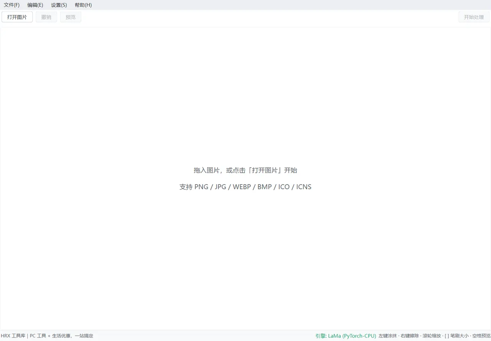

图片去水印
WatermarkRemover · 图片去水印
本地 AI 图片修复：涂抹水印区域，一键修复成自然画面

这是什么
图片去水印是一款本地运行的图片修复工具：打开一张带水印的图片，用鼠标把水印涂出来，AI 会自动把涂抹的区域修复成自然的画面，最后另存为新图片。整个过程在你的电脑上完成，图片不会被上传到任何服务器。
典型场景：去掉照片上的文字水印、Logo、日期戳，或抹掉画面里不想要的小物件。
下载渠道
下载后解压即用，不需要装运行库；软件全程在本机运行，文件不上传。
怎么用
安装
- 拿到软件压缩包（如
图片去水印_v1.29.7.zip），右键选择「全部解压」到任意文件夹 - 打开解压出的文件夹，找到 图片去水印.exe
- 如果杀毒软件首次运行时弹出提示，选择「允许运行」即可（软件无广告、无捆绑）
启动
- 双击 图片去水印.exe，启动后进入主界面（见下文「三、界面一览」）
- 软件同一时间只运行一个窗口：如果已经开着又双击了一次，不会开出第二个窗口，切回已打开的窗口即可
进阶：会使用 Python 的用户也可以用源码方式运行，参见文末「问题反馈」前端的说明。
基本流程：四步去掉水印
整个流程就是四步：打开图片 → 涂抹水印 → 预览效果 → 处理保存。
第一步：打开图片
这个功能做什么：把要处理的图片载入画布。
操作步骤：
- 点击工具栏【打开图片】按钮（或按 Ctrl+O，也可以直接把图片文件拖进画布）
- 在弹出的窗口里选中图片，点击【打开(O)】
操作后你会看到：图片出现在画布上，底部状态栏显示「已打开: 文件名」，工具栏的【撤销】【预览】【开始处理】同时变亮。
第二步：涂抹水印区域
这个功能做什么：把要去除的水印用红色涂抹出来，告诉软件修复哪里。
操作步骤：
- 在画布上按住鼠标左键，像用画笔一样把水印区域涂出来，涂过的地方会盖上一层红色
- 涂出界了就按住鼠标右键拖动，擦掉涂多的部分
- 水印小不好涂时，滚轮缩放画布、按住中键拖动平移，把画面放大了慢慢涂
- 笔刷太粗或太细时，按
[减小、]增大笔刷
小技巧：涂抹范围要整块盖住水印，尤其是文字的上下边缘。实测中只要漏掉字的上沿一小条，预览就会留一道白影；补涂一笔再预览，残影就没了。涂得越准，修复效果越好，速度也越快。
操作后你会看到：水印被红色蒙版盖住（蒙版就是这层红色标记，正式处理时它会消失）。鼠标位置会显示两个圆圈——实线圈是笔刷大小，虚线圈是边缘柔和的范围。
第三步：预览修复效果
这个功能做什么：先用小尺寸快速试一下修复效果，不用等完整处理，不满意可以回头继续涂。
操作步骤：
- 按空格键（或点击工具栏【预览】按钮）
- 稍等片刻，会弹出「预览对比」窗口，显示修复后的画面
- 在预览窗口里：滚轮缩放、左键拖动平移、长按左下角【原图】按钮可以切回原图对比前后差异
- 点【关闭】回到主界面
操作后你会看到：预览窗口里水印已经消失。预览是缩小了算的，所以画面会比正式结果偏软一点，这是正常的——它的作用是让你快速判断"位置涂对了吗、大概效果行不行"，不用等完整处理。效果不满意，回到画布用右键补涂或擦除，再按空格重新预览。
在预览窗口里按住左下角【原图】按钮不放，画面会切回带水印的原图，按钮文字变成「松开恢复」；松手回到修复后的画面。来回按几次，前后差别看得很清楚。
第四步：处理与保存
这个功能做什么：按原始分辨率完整修复图片，并把结果保存为新文件。
操作步骤：
- 预览满意后，点击工具栏【开始处理】（或按回车键），等待处理完成
- 完成后会弹出「预览对比」窗口，这次右下角多了【保存】按钮——先长按【原图】确认效果，再点【保存】
- 在保存窗口里选好位置和格式（默认 png），点击【保存】
- 也可以随时用菜单【文件】→【保存结果】（Ctrl+S）手动另存
操作后你会看到：图片保存成功。默认保存在原图所在文件夹，文件名自动加上时间戳（如 logo_20260118_153000.png），原图不会被覆盖。
如果你不喜欢每次都弹对比窗口：在【设置】里取消勾选「处理完成后显示原图对比」，以后处理完成会直接自动保存，不再弹出窗口。
功能详解
界面一览
- 菜单栏：【文件】【编辑】【设置】【帮助】四个菜单，常用的打开、保存、撤销都在里面
- 工具栏：【打开图片】【撤销】【预览】三个按钮在左上角，【开始处理】在右上角。刚启动还没打开图片时，除【打开图片】外都是灰的
- 画布：打开图片后图片显示在这里，你在这块区域上涂抹
- 状态栏：左边显示当前状态（比如「已打开: photo_main.png」）；右边依次是引擎状态「引擎: LaMa (PyTorch-CPU)」、常驻操作提示「左键涂抹 · 右键擦除 · 滚轮缩放 · [ ] 笔刷大小 · 空格预览」，忘了怎么操作时看一眼这里就行
状态栏的引擎那一格，是软件在告诉你"图是在这台电脑上算的"。括号里显示当前实际用的计算设备：CPU 或 CUDA，鼠标停上去还能看到"图片只在本机处理，不会上传"。
鼠标操作
| 操作 | 效果 |
|---|---|
| 左键拖动 | 涂抹红色蒙版 |
| 右键拖动 | 擦除涂错的地方 |
| 中键拖动 | 平移画布 |
| 滚轮 | 缩放画布（以鼠标所在位置为中心） |
缩放范围从 5% 到 8 倍，笔刷半径可设 1～200 像素（默认 20），羽化半径 0～50 像素（默认 5）。涂得快时软件会自动补齐两点之间的轨迹，不会断成一个个圆点。
键盘快捷键（默认值）
| 快捷键 | 功能 | 快捷键 | 功能 |
|---|---|---|---|
| Ctrl+O | 打开图片 | Ctrl+Del | 清除涂抹（一键清空） |
| Ctrl+S | 保存结果 | Ctrl+= | 放大画布 |
| Ctrl+Z | 撤销 | Ctrl+- | 缩小画布 |
| Ctrl+Y | 重做 | Ctrl+0 | 适应窗口 |
| Space | 快速预览 | [ | 减小笔刷 |
| Enter | 开始处理 | ] | 增大笔刷 |
| Ctrl+B | 批量去水印 | Ctrl+Q | 退出程序 |
涂错几笔用撤销（Ctrl+Z），整块不想留了用【编辑】→【清除涂抹】一键清空重来。以上快捷键都可以在【设置】里改成你顺手的键。
批量去水印
这个功能做什么：一批带水印的图片不用一张张打开处理——菜单栏【文件】→【批量模式】（Ctrl+B）打开批量窗口，添加图片、涂蒙版、一键处理整批。蒙版有两种模式（窗口左栏顶部切换）：
- 统一蒙版：整批图水印位置比例一致时用（同一软件截图、同一模板加水印）。涂一次，按相对位置套用到所有图。
- 逐张涂抹：每张图水印位置不同、或想逐张精调时用。点击队列项切换图片，每张图各自涂抹，已涂的带 ● 标记。
统一蒙版：操作步骤
- 添加图片：点【添加图片…】多选，或【添加文件夹…】导入整个文件夹（只认 png/jpg/webp/bmp/ico/icns，重复添加的自动忽略）
- 涂抹蒙版：第一张图会自动作为「参考图」显示在画布上，像单图模式一样把水印涂出来（左键涂、右键擦、滚轮缩放）；也可以选中其他行点【设为参考图】换一张来涂
- 预览效果（可选）：点【预览当前图效果】，对画布上这张图先看修复效果（快速预览、不保存），满意再开始整批
- 开始批量处理：点【开始批量处理】，进度条逐张推进；随时点【取消批量】，当前这张处理完就停
批量窗口左栏底部有【撤销】【重做】【适应窗口】，中间画布的涂法和单图完全一样。注意：单图正在处理的时候打不开批量窗口，会提示"单图处理进行中，请完成后再打开批量模式"。
逐张涂抹：操作步骤
- 左栏选「逐张涂抹」
- 添加图片，第一张自动显示在画布上，直接涂抹
- 点击队列里下一张再涂——切换时当前图的蒙版自动保存；已涂的图在队列里带 ● 标记，右侧也显示「已涂抹 / 未涂抹」
- 想改某张：再点它，已涂蒙版自动恢复，可继续补涂或 Ctrl+Z 撤销
- 全部涂完后点【开始批量处理】；还有未涂的会提示，不会开始。若有几张确实不想处理，可勾选左栏「跳过未涂抹的图片」，开始时只处理已涂的，结尾会给出「成功 x 张，失败 y 张」的小结
- 预览效果（可选）：点【预览当前图效果】先看当前这张的修复效果，满意再开始整批
蒙版会随图保存：逐张蒙版默认存在图片所在文件夹的 .watermark_masks 子目录里，每张图一份，文件名是「原图片名.mask.png」（如 trip_01.png.mask.png）。重新打开软件、重新添加同一批图片时蒙版自动恢复，标记直接显示已涂；不想落盘可在【设置】→【保存】里取消「批量模式：逐张蒙版随图保存」。不想要了删掉对应文件（或整个 .watermark_masks 文件夹）即可；把图片移到别的文件夹或改名后，需重新涂抹。统一蒙版不落盘，仅本次窗口内有效。
窗口会记住你的习惯：批量窗口会记住上次的蒙版模式、「跳过未涂抹」勾选和上次添加图片的目录，下次打开直接就是上次的状态。
结果保存在哪
- 保存位置：跟随设置里的「保存位置」——默认存在各原图旁边；设置了自定义目录则全部存到那里
- 文件名：
原名_no_wm.格式（如photo_no_wm.png），重名自动加-1、-2，不会覆盖任何文件；格式跟随设置里的「默认保存格式」 - 结果汇总：右侧列表逐行列出每张的成功/失败，失败的不影响其余图片，最后会给出「成功 x 张，失败 y 张」的小结
统一蒙版怎么套用到不同尺寸的图
蒙版按相对位置套用：参考图上涂在「横向 10%～30%、纵向 20%～42%」的区域，套到任何尺寸的图上都在同样的相对位置（自动缩放）。因此：
- ✅ 适合：水印位置在各张图里比例一致（最常见的批量场景）
- ⚠️ 注意：如果某些图与参考图宽高比不同（比如竖图混在横图里），蒙版会随宽高拉伸，位置可能有偏差——这类图建议挑出来用单图模式单独处理
- 更换参考图会清空已涂的蒙版，需要重新涂抹
软件设置
这个功能做什么：调整笔刷、保存习惯、快捷键和高级参数。
操作步骤：
- 点击菜单【设置】→【设置...】，打开设置窗口
- 按需修改四个分组的选项（窗口内容较多，向下滚动才能看到最后的「高级」分组）：
- 画笔：笔刷半径（一次涂抹的宽度，1～200 像素，默认 20）、羽化半径（涂抹边缘的柔和过渡，0～50 像素，默认 5，0 表示不柔和）
- 保存：是否在处理后弹出对比窗口；保存位置（图片所在目录或自定义目录）；默认格式（png / jpg / webp / bmp）；「批量模式：逐张蒙版随图保存」（关闭后逐张涂抹的蒙版仅本次批量窗口内有效，不写入图片文件夹）
- 快捷键：12 项逐个点选，按下你想用的组合键即可替换默认值。若两个功能按了同一个键，会弹出「快捷键冲突」提示，改开才行
- 高级：设备（保持「自动」即可，有 NVIDIA 显卡会自动加速，没有则回退 CPU）；最大边长（超过这个值先缩小处理再放大回原尺寸，512～4096，默认 2048，调小可换更快速度但损失细节）；预览最大边长（256～2048，默认 512，调小可加快预览速度）
- 点击【确定】保存设置；点【取消】放弃修改
操作后你会看到：设置立即生效，并且会被记住，下次打开软件不用重新调。
运行环境
| 项目 | 要求 |
|---|---|
| 操作系统 | Windows 10 / 11（64 位） |
| 硬盘空间 | 建议预留 1GB 以上（软件包约 430MB） |
| 显卡 | 可选。有 NVIDIA 显卡时自动加速；没有则用 CPU，一样能完成处理 |
常见问题
- 第一次预览/处理特别慢，正常吗？
-
原因：正常。第一次使用时软件要加载 AI 修复模型，在没有独立显卡的电脑上会用 CPU 计算，首次等待会明显偏长。
解决：耐心等一次即可，之后同一批操作会快很多。有 NVIDIA 显卡的电脑保持设置里「设备」为「自动」就能自动启用加速。
- 处理一张图要等多久？怎么更快？
-
原因：处理时间和涂抹面积、图片大小、是否用显卡都有关系。纯 CPU 的电脑处理大图需要多等一会儿。
解决：三个办法——只涂抹水印本身，不要大面积涂；在【设置】→【高级】里把「最大边长」调小（如 1024），速度会明显加快，但细节会略有损失；有 NVIDIA 显卡的话让「设备」保持「自动」。作为参考：一台无独立显卡的笔记本上，一张 900×600 的图完整处理约 8 秒、预览约 2～5 秒（同一台机器同一张图实测，你的结果会因机器而异）。
- 预览里水印没消干净，留了一道白影？
-
原因：多半是蒙版没整块盖住水印，漏了字的某条边。模型只重画被蒙版标住的区域，漏住的边就留在原地。
解决：回画布把漏的地方补涂一笔（必要时按
[把笔刷调小描边），再按空格重新预览。这一步不用等完整处理，很快。 - 我的图片会被上传到网上吗？
-
原因：不会。
解决：软件全部在本机完成，不需要联网，断网也能正常使用。状态栏右侧会显示当前用的推理引擎，鼠标停上去有说明。
- 提示找不到模型文件？
-
原因：只有用源码方式运行才会遇到——AI 模型文件体积较大，没有随源码一起存放。
解决：这时会弹出一个标题为「引擎初始化失败」的提示框，内容是"LaMa 模型文件不存在，请确认模型已随程序打包。"按项目自述文件的说明下载
big-lama.pt模型文件，放入源码目录的src/watermark_remover/resources/models/文件夹后重新启动。使用打包版（exe）不会遇到这个问题，模型已内置。 - 处理完成后没有弹对比窗口，直接就保存了？
-
原因：设置里关闭了「处理完成后显示原图对比」，处理完成会自动按默认位置和格式保存。
解决：想要每次确认后再保存，就在【设置】→【保存】里重新勾选「处理完成后显示原图对比」。
- 批量模式涂好的蒙版存在哪？想清掉怎么办？
-
原因：逐张涂抹模式的蒙版默认跟着图片存，位置在图片所在文件夹的
.watermark_masks子目录，每张一份，文件名是「原图片名.mask.png」。解决：删掉对应文件、或直接删掉整个
.watermark_masks文件夹即可。以后不想让它往图片文件夹里写东西，在【设置】→【保存】里取消「批量模式：逐张蒙版随图保存」，蒙版就只在当前批量窗口里有效。统一蒙版本来就不落盘，关掉批量窗口就没了。 - 双击图标没反应？
-
原因：软件同一时间只允许运行一个窗口，已经有窗口开着时，再次启动不会有新窗口出现。
解决：在任务栏找到已打开的「图片去水印」窗口直接使用；确实找不到窗口时，在任务管理器里结束「图片去水印」进程后再重新双击打开。
注意事项
- 保存的是新文件（文件名带时间戳），原图不会被覆盖；但若在保存窗口手动选了已有文件名，会覆盖同名文件，注意确认
- 打开 ico / icns 图标文件后，保存时请从 png / jpg / webp / bmp 中选择格式
- 建议养成「先预览、满意再处理」的习惯，避免不必要的完整处理等待
- 涂抹时把水印整块盖住（文字的上下边缘尤其别漏），同时别把无关区域也涂进去——漏了会留残影，多涂会白白扩大重画范围
- 你的设置会自动保存（包括窗口位置和大小），升级新版本后自动沿用，无需重新配置
其它叫法与搜索词
也有人叫它去水印、水印去除、抹除物体。
英文名 WatermarkRemover，
程序名 图片去水印。
想找这类工具时常见的说法：用鼠标把水印涂出来、Logo、日期戳、逐张涂抹、每张图各自的蒙版、不满意可以继续调整、右键擦除、中键拖动、小水印也能涂得精准、也可一键清空全部涂抹、打开 png、jpg。